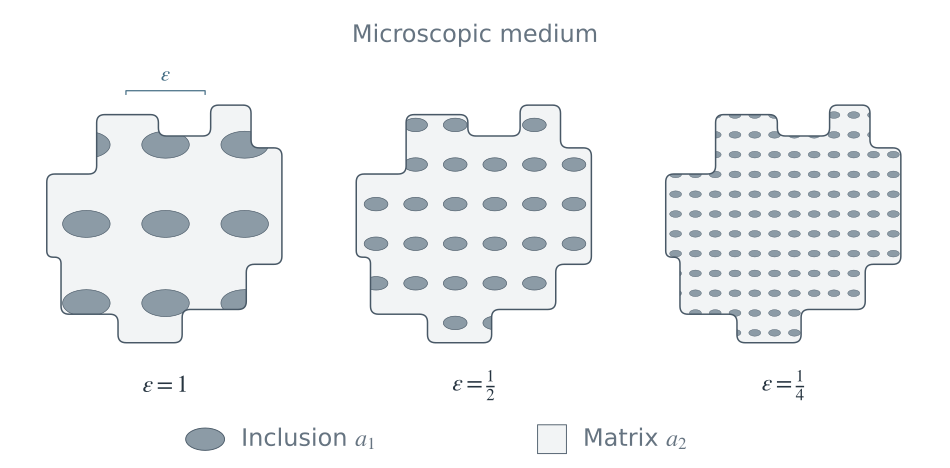
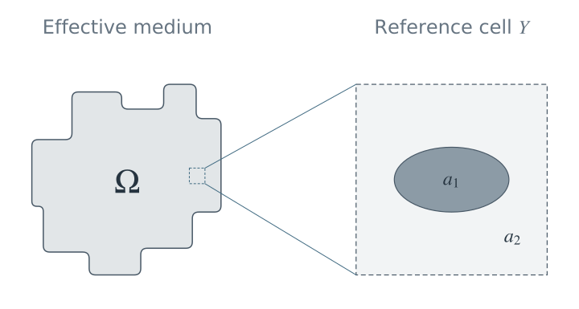

Homogenisierung & Mehrskalenmedien
Rigorose Herleitung makroskopischer Gleichungen aus PDEs in komplexen, periodischen und evolvierenden mikroskopischen Geometrien.
Überblick
Die Homogenisierung untersucht Gleichungen in Materialien mit sehr feinen räumlichen Strukturen und leitet makroskopische Modelle her, welche deren wesentlichen Einfluss erfassen. Ein Material mit einer sehr kleinen, aber positiven charakteristischen Längenskala \(\varepsilon\) soll durch ein homogenes Ersatzmaterial beschrieben werden: Dazu betrachtet man künstlich den Grenzübergang \(\varepsilon\to0\) und gewinnt effektive Gleichungen, ohne jedes mikroskopische Detail aufzulösen. Schwerpunkte meiner Forschung sind insbesondere Medien mit zeitlich veränderlicher Geometrie sowie Metamaterialien, unter anderem mit Blick auf effektiven Transport, Fluidströmungen und elektromagnetische Eigenschaften.
Ein grundlegendes Beispiel ist die periodische Homogenisierung eines stationären elliptischen Leitfähigkeitsproblems. Das Material besteht aus zwei Komponenten mit unterschiedlichen Leitfähigkeiten, die periodisch auf der kleinen Längenskala \(\varepsilon\) angeordnet sind. Obwohl das reale Material ein festes, kleines \(\varepsilon>0\) besitzt, betrachtet man den idealisierten Grenzübergang \(\varepsilon\to0\), um ein homogenes Ersatzmaterial herzuleiten. Dessen effektive Leitfähigkeit wird durch den konstanten Tensor \(A^{\mathrm{hom}}\) beschrieben, in den der Einfluss der nicht mehr aufgelösten mikroskopischen Phasen eingeht.

Mikroskopische Gleichung

Effektive Gleichung
Effektiver Koeffizient
Zellproblem
Die Zellkorrektoren \(\chi_j\) beschreiben, wie die periodische Mikrostruktur einen makroskopischen Einheitsgradienten in Richtung \(e_j\) verändert. Durch Mittelung des resultierenden mikroskopischen Flusses über eine Einheitszelle erhält man \(A^{\mathrm{hom}}\). Dieser Tensor kann anisotrop sein, obwohl die lokale Leitfähigkeit \(a(y)\) skalar ist. Das stationäre Beispiel veranschaulicht das Grundprinzip, das auch komplexeren Homogenisierungsproblemen mit evolvierenden Mikrostrukturen, Fluidströmungen und effektiven Interfacebedingungen zugrunde liegt.